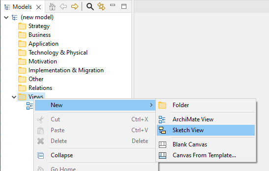
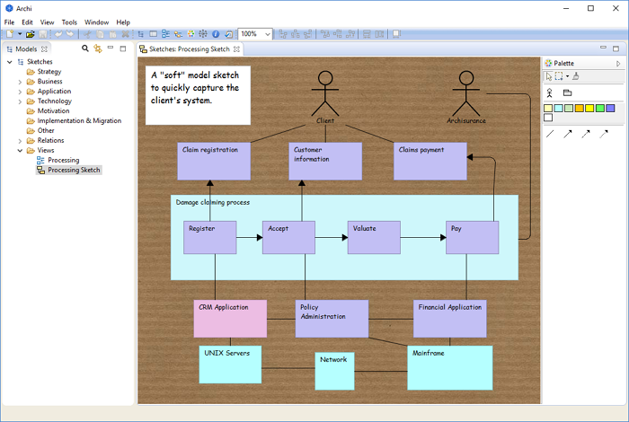
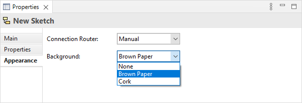

草图视图是Archi的一个实验性功能。草图视图的设计灵感来源于ArchiMate规范文档中定义的“介绍性视点”:
它通常用于设计轨迹的开始，当不需要全部细节时使用,或用于向不需要复杂表示法的非架构师解释架构模型的本质。这种基本的、不太正式的视点的另一用途是，它试图避免产生架构设计已经固定的印象，而使用更正式、高度结构化或详细的可视化时，这种想法可能很容易出现。我们对概念和关系使用简化的表示法。除“触发”和“实现”之外的所有关系都用简单的线表示；“实现”的方向是实现的服务；“触发”也用一个箭头表示。” - ArchiMate 规范 1.0 p.72
在某些方面，这与Marc Lankhorst关于使用对话技术对建模过程进行建模的描述类似，其目的是捕获模型的本质：
“在架构开发中，我们发现一些常见的对话技术，其中涉及到架构模型的交流：
- 棕色纸会议：类似于头脑风暴的结构化小组会议（最多约 15 人），其中从小组中的个人引出项目（关键字或短语），以回答诸如：“我们当前的IT架构中的关键功能问题是什么？”这样的问题。通常，每个单独的项目都写在一个小的粘性便条（“便利贴”）上。然后将这些物品收集在一张纸上（传统上是廉价的棕色纸），并通过开放和创造性的小组流程进行结构化和分类。这可能涉及添加、删除、合并或更改项目。通常会涉及调解人或促进者。” - Marc Lankhorst等人“Enterprise Architecture at Work”，第二版，第 82 页
在Archi中可以创建“草图视图”。要为模型添加新的草图视图，请右键单击模型树中的“视图”文件夹，然后从上下文菜单中选择“新建->草图视图”：
添加一个新的“草图”视图
将草图视图添加到模型后，可以通过双击从树中打开它。可以将任意数量的视图添加到模型并同时打开。视图排列在应用程序窗口主区域的选项卡中。
草图视图示例
您可以在视图中添加新的便利贴、一个施动者人物和三种类型的连接。没有关于关系或便签的含义的规则。所有对象都可以在属性窗口中进行编辑。您可以自由捕捉模型的草图，然后将其转换为完全受约束的ArchiMate模型和视图。
双击便利贴打开属性窗口，点击选中的便利贴可以直接编辑便利贴的文本。
如果您愿意，可以在 首选项 中设置默认背景图片，并在 属性窗口的外观页签的背景进行设置：
草图视图背景选项
注意 - 草图视图可能会在未来的版本中被弃用。目的是将草图、画布和ArchiMate视图合并为一种视图类型。